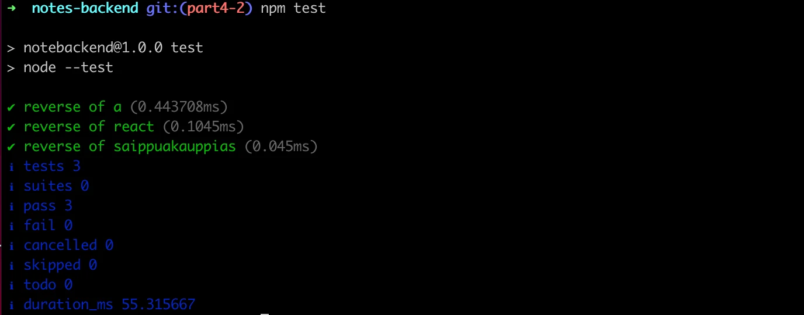
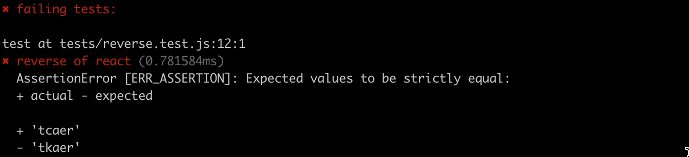
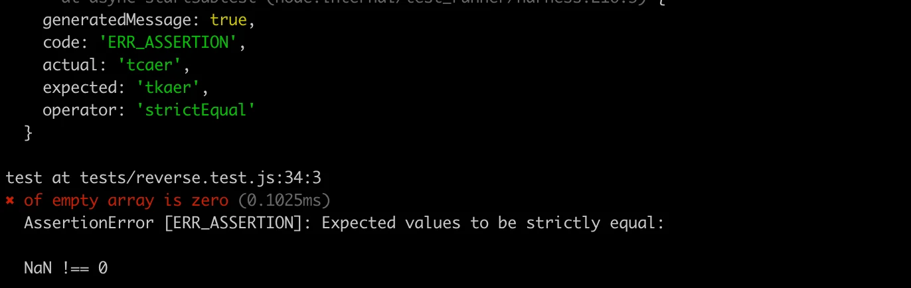
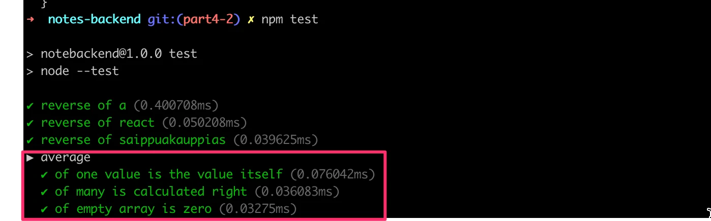
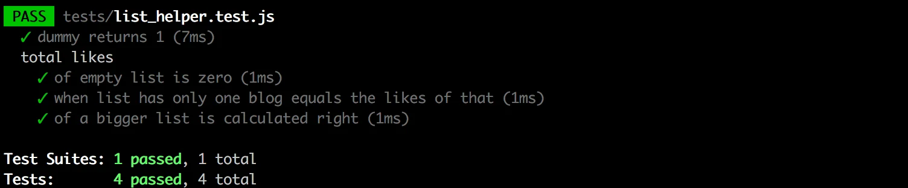

الجزء 4: اختبار الخوادم وإدارة المستخدمين
بنية تطبيق الخادم ومقدمة في الاختبار
لنواصل عملنا على الواجهة الخلفية لتطبيق الملاحظات الذي بدأناه في الجزء 3.
بنية المشروع
ملاحظة: كُتبت مادة هذا المقرر باستخدام الإصدار v22.3.0 من Node.js. تأكد من أن إصدار Node لديك حديث على الأقل بقدر الإصدار المستخدم في المادة (يمكنك التحقق من الإصدار بتشغيل node -v في سطر الأوامر).
قبل أن ننتقل إلى موضوع الاختبار، سنعدّل بنية مشروعنا ليلتزم بأفضل ممارسات Node.js.
بعد إجراء التغييرات على بنية مجلدات مشروعنا، سننتهي بالبنية التالية:
├── controllers
│ └── notes.js
├── dist
│ └── ...
├── models
│ └── note.js
├── utils
│ ├── config.js
│ ├── logger.js
│ └── middleware.js
├── app.js
├── index.js
├── package-lock.json
├── package.json
حتى الآن كنا نستخدم console.log وconsole.error لطباعة معلومات مختلفة من الشيفرة. لكن هذه ليست طريقة جيدة جداً لفعل الأشياء. لنفصل كل الطباعة إلى وحدة التحكم في وحدتها الخاصة utils/logger.js:
const info = (...params) => {
console.log(...params)
}
const error = (...params) => {
console.error(...params)
}
module.exports = { info, error }
يحتوي المسجِّل على دالتين، info لطباعة رسائل السجل العادية، و__error__ لجميع رسائل الأخطاء.
استخراج التسجيل إلى وحدته الخاصة فكرة جيدة من عدة نواحٍ. لو أردنا البدء بكتابة السجلات في ملف أو إرسالها إلى خدمة تسجيل خارجية مثل graylog أو papertrail لما كان علينا سوى إجراء التغييرات في مكان واحد.
نُقلت معالجة متغيرات البيئة إلى ملف منفصل utils/config.js:
require('dotenv').config()
const PORT = process.env.PORT
const MONGODB_URI = process.env.MONGODB_URI
module.exports = { MONGODB_URI, PORT }
يمكن لأجزاء التطبيق الأخرى الوصول إلى متغيرات البيئة باستيراد وحدة الإعدادات:
const config = require('./utils/config')
logger.info(`Server running on port ${config.PORT}`)
نُقلت معالجات المسارات أيضاً إلى وحدة مخصصة. يُشار عادةً إلى معالجات أحداث المسارات باسم controllers، ولهذا السبب أنشأنا مجلد controllers جديداً. جميع المسارات المتعلقة بالملاحظات موجودة الآن في وحدة notes.js داخل مجلد controllers.
محتويات وحدة notes.js هي التالية:
const notesRouter = require('express').Router()
const Note = require('../models/note')
notesRouter.get('/', (request, response) => {
Note.find({}).then(notes => {
response.json(notes)
})
})
notesRouter.get('/:id', (request, response, next) => {
Note.findById(request.params.id)
.then(note => {
if (note) {
response.json(note)
} else {
response.status(404).end()
}
})
.catch(error => next(error))
})
notesRouter.post('/', (request, response, next) => {
const body = request.body
const note = new Note({
content: body.content,
important: body.important || false,
})
note.save()
.then(savedNote => {
response.json(savedNote)
})
.catch(error => next(error))
})
notesRouter.delete('/:id', (request, response, next) => {
Note.findByIdAndDelete(request.params.id)
.then(() => {
response.status(204).end()
})
.catch(error => next(error))
})
notesRouter.put('/:id', (request, response, next) => {
const { content, important } = request.body
Note.findById(request.params.id)
.then(note => {
if (!note) {
return response.status(404).end()
}
note.content = content
note.important = important
return note.save().then((updatedNote) => {
response.json(updatedNote)
})
})
.catch(error => next(error))
})
module.exports = notesRouter
هذا نسخ ولصق شبه حرفي لملف index.js السابق لدينا.
لكن هناك بعض التغييرات المهمة. في بداية الملف تماماً ننشئ كائن موجّه (router) جديداً:
const notesRouter = require('express').Router()
//...
module.exports = notesRouter
تصدّر الوحدة الموجّه ليكون متاحاً لجميع مستهلكي الوحدة.
تُعرَّف جميع المسارات الآن لكائن الموجّه، على غرار ما كان يُفعل سابقاً مع الكائن الذي يمثل التطبيق بأكمله.
تجدر الإشارة إلى أن المسارات في معالجات المسارات قد اختُصرت. في النسخة السابقة، كان لدينا:
app.delete('/api/notes/:id', (request, response, next) => {
وفي النسخة الحالية، لدينا:
notesRouter.delete('/:id', (request, response, next) => {
إذن ما هي كائنات الموجّه هذه بالضبط؟ يقدم دليل Express التفسير التالي:
كائن الموجّه هو نسخة معزولة من الوسيط والمسارات. يمكنك التفكير فيه كـ«تطبيق مصغّر»، قادر فقط على أداء وظائف الوسيط والتوجيه. كل تطبيق Express لديه موجّه تطبيق مدمج.
الموجّه في الواقع وسيط (middleware)، يمكن استخدامه لتعريف «المسارات المرتبطة» في مكان واحد، ويوضع عادةً في وحدته الخاصة.
ملف app.js الذي ينشئ التطبيق الفعلي يستخدم الموجّه كما هو موضح أدناه:
const notesRouter = require('./controllers/notes')
app.use('/api/notes', notesRouter)
يُستخدم الموجّه الذي عرّفناه سابقاً إذا بدأ عنوان URL للطلب بـ /api/notes. لهذا السبب، يجب أن يعرّف كائن notesRouter الأجزاء النسبية من المسارات فقط، أي المسار الفارغ / أو المعامل /:id فقط.
أُنشئ ملف يعرّف التطبيق، app.js، في جذر المستودع:
const express = require('express')
const mongoose = require('mongoose')
const config = require('./utils/config')
const logger = require('./utils/logger')
const middleware = require('./utils/middleware')
const notesRouter = require('./controllers/notes')
const app = express()
logger.info('connecting to', config.MONGODB_URI)
mongoose
.connect(config.MONGODB_URI, { family: 4 })
.then(() => {
logger.info('connected to MongoDB')
})
.catch((error) => {
logger.error('error connection to MongoDB:', error.message)
})
app.use(express.static('dist'))
app.use(express.json())
app.use(middleware.requestLogger)
app.use('/api/notes', notesRouter)
app.use(middleware.unknownEndpoint)
app.use(middleware.errorHandler)
module.exports = app
يستخدم الملف وسائط مختلفة، وأحدها notesRouter المرتبط بالمسار /api/notes.
نُقل الوسيط المخصص لدينا إلى وحدة جديدة utils/middleware.js:
const logger = require('./logger')
const requestLogger = (request, response, next) => {
logger.info('Method:', request.method)
logger.info('Path: ', request.path)
logger.info('Body: ', request.body)
logger.info('---')
next()
}
const unknownEndpoint = (request, response) => {
response.status(404).send({ error: 'unknown endpoint' })
}
const errorHandler = (error, request, response, next) => {
logger.error(error.message)
if (error.name === 'CastError') {
return response.status(400).send({ error: 'malformatted id' })
} else if (error.name === 'ValidationError') {
return response.status(400).json({ error: error.message })
}
next(error)
}
module.exports = {
requestLogger,
unknownEndpoint,
errorHandler
}
أُسندت مسؤولية إنشاء الاتصال بقاعدة البيانات إلى وحدة app.js. ملف note.js داخل مجلد models يعرّف فقط مخطط Mongoose للملاحظات.
const mongoose = require('mongoose')
const noteSchema = new mongoose.Schema({
content: {
type: String,
required: true,
minlength: 5
},
important: Boolean,
})
noteSchema.set('toJSON', {
transform: (document, returnedObject) => {
returnedObject.id = returnedObject._id.toString()
delete returnedObject._id
delete returnedObject.__v
}
})
module.exports = mongoose.model('Note', noteSchema)
تُبسَّط محتويات ملف index.js المستخدم لتشغيل التطبيق كما يلي:
const app = require('./app') // تطبيق Express الفعلي
const config = require('./utils/config')
const logger = require('./utils/logger')
app.listen(config.PORT, () => {
logger.info(`Server running on port ${config.PORT}`)
})
يستورد ملف index.js التطبيق الفعلي فقط من ملف app.js ثم يشغّل التطبيق. تُستخدم دالة info في وحدة المسجِّل للطباعة في وحدة التحكم التي تخبر بأن التطبيق يعمل.
الآن أصبح تطبيق Express والشيفرة التي تعتني بخادم الويب منفصلين عن بعضهما باتباع أفضل الممارسات. إحدى مزايا هذه الطريقة أن التطبيق يمكن اختباره الآن على مستوى استدعاءات HTTP API دون إجراء استدعاءات فعلياً عبر HTTP على الشبكة، وهذا يجعل تنفيذ الاختبارات أسرع.
باختصار، تبدو بنية المجلدات هكذا بعد إجراء التغييرات:
├── controllers
│ └── notes.js
├── dist
│ └── ...
├── models
│ └── note.js
├── utils
│ ├── config.js
│ ├── logger.js
│ └── middleware.js
├── app.js
├── index.js
├── package-lock.json
├── package.json
بالنسبة للتطبيقات الأصغر، لا تهم البنية كثيراً. عندما يبدأ التطبيق بالنمو في الحجم، سيتعين عليك إنشاء نوع من البنية وفصل مسؤوليات التطبيق المختلفة في وحدات منفصلة. سيجعل هذا تطوير التطبيق أسهل بكثير.
لا توجد بنية مجلدات صارمة أو اصطلاح تسمية ملفات مطلوب لتطبيقات Express. في المقابل، يتطلب Ruby on Rails بنية محددة. بنيتنا الحالية تتبع ببساطة بعض أفضل الممارسات التي قد تصادفها على الإنترنت.
يمكنك العثور على شيفرة تطبيقنا الحالي كاملة في فرع part4-1 من مستودع GitHub هذا.
إذا استنسخت المشروع لنفسك، شغّل الأمر npm install قبل تشغيل التطبيق بـ npm run dev.
ملاحظة عن التصدير
استخدمنا نوعين مختلفين من التصدير في هذا الجزء. أولاً، مثلاً، يقوم ملف utils/logger.js بالتصدير كما يلي:
const info = (...params) => {
console.log(...params)
}
const error = (...params) => {
console.error(...params)
}
module.exports = { info, error } // highlight-line
يصدّر الملف كائناً له حقلان، وكلاهما دالتان. يمكن استخدام الدالتين بطريقتين مختلفتين. الخيار الأول هو طلب الكائن بأكمله والإشارة إلى الدوال عبر الكائن باستخدام الترميز النقطي:
const logger = require('./utils/logger')
logger.info('message')
logger.error('error message')
الخيار الآخر هو تفكيك الدوال إلى متغيراتها الخاصة في عبارة require:
const { info, error } = require('./utils/logger')
info('message')
error('error message')
قد تكون طريقة التصدير الثانية مفضلة إذا كان جزء صغير فقط من الدوال المصدَّرة يُستخدم في ملف.
لكن في بعض الحالات، يُصدَّر «شيء» واحد فقط. على سبيل المثال، يصدّر controller/notes.js «شيئاً» واحداً هكذا:
const notesRouter = require('express').Router()
const Note = require('../models/note')
// ...
module.exports = notesRouter // highlight-line
لأن «شيئاً» واحداً فقط يُصدَّر، يمكن استيراده واستخدامه فقط ككائن واحد:
const notesRouter = require('./controllers/notes')
// ...
app.use('/api/notes', notesRouter)
الآن، يُسند «الشيء» المصدَّر (في هذه الحالة، كائن موجّه) إلى متغير notesRouter ويُستخدم ككائن واحد.
إيجاد استخدامات صادراتك باستخدام VS Code
يمتلك VS Code ميزة عملية تتيح لك رؤية أين صُدِّرت وحداتك. يمكن أن يكون هذا مفيداً جداً لإعادة الهيكلة. على سبيل المثال، إذا قررت تقسيم دالة إلى دالتين منفصلتين، فقد تتعطل شيفرتك إذا لم تعدّل جميع الاستخدامات. يصعب ذلك إذا كنت لا تعرف أين توجد. لكن عليك تعريف صادراتك بطريقة معينة ليعمل هذا.
إذا نقرت بزر الفأرة الأيمن على متغير في الموضع الذي صُدِّر منه واخترت «Find All References»، فسيعرض لك كل مكان يُستورد فيه المتغير. لكن إذا أسندت كائناً مباشرةً إلى module.exports، فلن يعمل ذلك. الحل البديل هو إسناد الكائن الذي تريد تصديره إلى متغير مسمّى ثم تصدير المتغير المسمّى. لن يعمل أيضاً إذا فككت عند الاستيراد؛ عليك استيراد المتغير المسمّى ثم التفكيك، أو استخدام الترميز النقطي فقط لاستخدام الدوال الموجودة في المتغير المسمّى.
تأثير طبيعة VS Code على طريقة كتابتك للشيفرة ليس مثالياً على الأرجح، لذا عليك أن تقرر بنفسك إن كانت المقايضة تستحق العناء.
تمارين 4.1.-4.2.
ملاحظة: كُتبت مادة هذا المقرر باستخدام الإصدار v22.3.0 من Node.js. تأكد من أن إصدار Node لديك حديث على الأقل بقدر الإصدار المستخدم في المادة (يمكنك التحقق من الإصدار بتشغيل node -v في سطر الأوامر).
في تمارين هذا الجزء، سنبني تطبيق قائمة المدونات، يتيح للمستخدمين حفظ معلومات عن مدونات مثيرة للاهتمام صادفوها على الإنترنت. لكل مدونة مدرجة سنحفظ المؤلف والعنوان وURL وعدد التصويتات الإيجابية (upvotes) من مستخدمي التطبيق.
4.1 قائمة المدونات، الخطوة 1
لنتخيل موقفاً تستقبل فيه بريداً إلكترونياً يحتوي على جسم التطبيق والتعليمات التالية:
const express = require('express')
const mongoose = require('mongoose')
const app = express()
const blogSchema = mongoose.Schema({
title: String,
author: String,
url: String,
likes: Number,
})
const Blog = mongoose.model('Blog', blogSchema)
const mongoUrl = 'mongodb://localhost/bloglist'
mongoose.connect(mongoUrl, { family: 4 })
app.use(express.json())
app.get('/api/blogs', (request, response) => {
Blog.find({}).then((blogs) => {
response.json(blogs)
})
})
app.post('/api/blogs', (request, response) => {
const blog = new Blog(request.body)
blog.save().then((result) => {
response.status(201).json(result)
})
})
const PORT = 3003
app.listen(PORT, () => {
console.log(`Server running on port ${PORT}`)
})
حوّل التطبيق إلى مشروع npm فعّال. للحفاظ على إنتاجية تطويرك، اضبط التطبيق ليُنفَّذ بـ node --watch. يمكنك إنشاء قاعدة بيانات جديدة لتطبيقك باستخدام MongoDB Atlas، أو استخدام قاعدة البيانات نفسها من تمارين الجزء السابق.
تحقق من إمكانية إضافة مدونات إلى القائمة باستخدام Postman أو عميل REST في VS Code، ومن أن التطبيق يعيد المدونات المضافة عند نقطة النهاية الصحيحة.
4.2 قائمة المدونات، الخطوة 2
أعد هيكلة التطبيق إلى وحدات منفصلة كما هو موضح سابقاً في هذا الجزء من مادة المقرر.
ملاحظة أعد هيكلة تطبيقك بخطوات صغيرة وتحقق من أنه يعمل بعد كل تغيير تجريه. إذا حاولت أخذ «طريق مختصر» بإعادة هيكلة أشياء كثيرة دفعة واحدة، فسيدخل قانون مورفي حيز التنفيذ ويكاد يكون مؤكداً أن شيئاً ما سيتعطل في تطبيقك. سينتهي «الطريق المختصر» بمستغرق وقت أطول من التقدم ببطء وبمنهجية.
من أفضل الممارسات أن تعمل commit لشيفرتك كلما كانت في حالة مستقرة. يسهّل هذا الرجوع إلى حالة كان التطبيق فيها ما يزال يعمل.
إذا واجهت مشكلات مع كون content.body قيمته undefined بلا سبب ظاهر، فتأكد من أنك لم تنسَ إضافة app.use(express.json()) قرب أعلى الملف.
اختبار تطبيقات Node
أهملنا تماماً مجالاً أساسياً من تطوير البرمجيات، ألا وهو الاختبار الآلي.
لنبدأ رحلتنا في الاختبار بالنظر إلى اختبارات الوحدة. منطق تطبيقنا بسيط جداً لدرجة أنه لا يوجد الكثير مما يستحق اختباره باختبارات الوحدة. لننشئ ملفاً جديداً utils/for_testing.js ونكتب دالتين بسيطتين يمكننا استخدامهما للتدرب على كتابة الاختبارات:
const reverse = (string) => {
return string
.split('')
.reverse()
.join('')
}
const average = (array) => {
const reducer = (sum, item) => {
return sum + item
}
return array.reduce(reducer, 0) / array.length
}
module.exports = {
reverse,
average,
}
تستخدم دالة average طريقة reduce الخاصة بالمصفوفات. إذا لم تكن الطريقة مألوفة لك بعد، فهذا وقت مناسب لمشاهدة الفيديوهات الثلاثة الأولى من سلسلة Functional JavaScript على YouTube.
يتوفر عدد كبير من مكتبات الاختبار، أو مشغّلات الاختبار، لـ JavaScript. ملك مكتبات الاختبار القديم هو Mocha، الذي حلّ محله قبل بضع سنوات Jest. ومن الوافدين الجدد إلى المكتبات Vitest، الذي يقدّم نفسه كجيل جديد من مكتبات الاختبار.
في الوقت الحاضر، لدى Node أيضاً مكتبة اختبار مدمجة node:test، وهي مناسبة تماماً لاحتياجات المقرر.
لنعرّف سكربت npm باسم test لتنفيذ الاختبارات:
{
// ...
"scripts": {
"start": "node index.js",
"dev": "node --watch index.js",
"test": "node --test", // highlight-line
"lint": "eslint ."
},
// ...
}
لننشئ مجلداً منفصلاً لاختباراتنا باسم tests وننشئ ملفاً جديداً باسم reverse.test.js بالمحتويات التالية:
const { test } = require('node:test')
const assert = require('node:assert')
const reverse = require('../utils/for_testing').reverse
test('reverse of a', () => {
const result = reverse('a')
assert.strictEqual(result, 'a')
})
test('reverse of react', () => {
const result = reverse('react')
assert.strictEqual(result, 'tcaer')
})
test('reverse of saippuakauppias', () => {
const result = reverse('saippuakauppias')
assert.strictEqual(result, 'saippuakauppias')
})
يُعرِّف الاختبار الكلمة المفتاحية test والمكتبة assert، التي تستخدمها الاختبارات للتحقق من نتائج الدوال قيد الاختبار.
في السطر التالي، يستورد ملف الاختبار الدالة المطلوب اختبارها ويسندها إلى متغير اسمه reverse:
const reverse = require('../utils/for_testing').reverse
تُعرَّف حالات الاختبار الفردية بدالة test. الوسيط الأول للدالة هو وصف الاختبار كنص. الوسيط الثاني هو دالة تعرّف الوظيفة الخاصة بحالة الاختبار. تبدو وظيفة حالة الاختبار الثانية هكذا:
() => {
const result = reverse('react')
assert.strictEqual(result, 'tcaer')
}
أولاً، ننفذ الشيفرة المطلوب اختبارها، أي نولّد عكس النص react. بعد ذلك، نتحقق من النتائج بالطريقة strictEqual من مكتبة assert.
كما هو متوقع، تنجح جميع الاختبارات:

في المقرر، نتبع الاصطلاح الذي تنتهي فيه أسماء ملفات الاختبار بـ .test.js، لأن مكتبة الاختبار node:test تنفذ تلقائياً ملفات الاختبار المسماة بهذه الطريقة.
لنُعطّل الاختبار:
test('reverse of react', () => {
const result = reverse('react')
assert.strictEqual(result, 'tkaer')
})
يؤدي تشغيل هذا الاختبار إلى رسالة الخطأ التالية:

لنضف بعض الاختبارات لدالة average أيضاً. لننشئ ملفاً جديداً tests/average.test.js ونضف إليه المحتوى التالي:
const { test, describe } = require('node:test')
const assert = require('node:assert')
const average = require('../utils/for_testing').average
describe('average', () => {
test('of one value is the value itself', () => {
assert.strictEqual(average([1]), 1)
})
test('of many is calculated right', () => {
assert.strictEqual(average([1, 2, 3, 4, 5, 6]), 3.5)
})
test('of empty array is zero', () => {
assert.strictEqual(average([]), 0)
})
})
يكشف الاختبار أن الدالة لا تعمل بشكل صحيح مع مصفوفة فارغة (السبب أن القسمة على صفر في JavaScript تنتج NaN):

إصلاح الدالة سهل جداً:
const average = array => {
const reducer = (sum, item) => {
return sum + item
}
return array.length === 0
? 0
: array.reduce(reducer, 0) / array.length
}
إذا كان طول المصفوفة 0 فإننا نعيد 0، وفي جميع الحالات الأخرى نستخدم طريقة reduce لحساب المتوسط.
هناك بعض الأمور التي تجدر ملاحظتها بشأن الاختبارات التي كتبناها للتو. عرّفنا كتلة describe حول الاختبارات التي أُعطي لها الاسم average:
describe('average', () => {
// الاختبارات
})
يمكن استخدام كتل describe لتجميع الاختبارات في مجموعات منطقية. يستخدم مخرج الاختبار أيضاً اسم كتلة describe:

كما سنرى لاحقاً، تكون كتل describe ضرورية عندما نريد تنفيذ بعض عمليات الإعداد أو التفكيك المشتركة لمجموعة من الاختبارات.
أمر آخر جدير بالملاحظة أننا كتبنا الاختبارات بطريقة مختصرة جداً، دون إسناد مخرجات الدالة قيد الاختبار إلى متغير:
test('of empty array is zero', () => {
assert.strictEqual(average([]), 0)
})
تمارين 4.3.-4.7.
لننشئ مجموعة من الدوال المساعدة الأنسب للعمل مع أقسام describe في قائمة المدونات. أنشئ الدوال في ملف باسم utils/list_helper.js. اكتب اختباراتك في ملف اختبار باسم مناسب داخل مجلد tests.
4.3: الدوال المساعدة واختبارات الوحدة، الخطوة 1
أولاً، عرّف دالة dummy تستقبل مصفوفة من منشورات المدونات كوسيط وتعيد دائماً القيمة 1. يجب أن تكون محتويات ملف list_helper.js في هذه المرحلة كما يلي:
const dummy = (blogs) => {
// ...
}
module.exports = {
dummy
}
تحقق من أن إعداد الاختبار لديك يعمل بالاختبار التالي:
const { test, describe } = require('node:test')
const assert = require('node:assert')
const listHelper = require('../utils/list_helper')
test('dummy returns one', () => {
const blogs = []
const result = listHelper.dummy(blogs)
assert.strictEqual(result, 1)
})
4.4: الدوال المساعدة واختبارات الوحدة، الخطوة 2
عرّف دالة جديدة totalLikes تستقبل قائمة من منشورات المدونات كوسيط. تعيد الدالة المجموع الكلي لـ likes في جميع منشورات المدونات.
اكتب اختبارات مناسبة للدالة. يُوصى بوضع الاختبارات داخل كتلة describe ليُجمَّع مخرج تقرير الاختبار بشكل مرتب:

يمكن تعريف مدخلات الاختبار للدالة هكذا:
describe('total likes', () => {
const listWithOneBlog = [
{
_id: '5a422aa71b54a676234d17f8',
title: 'Go To Statement Considered Harmful',
author: 'Edsger W. Dijkstra',
url: 'https://homepages.cwi.nl/~storm/teaching/reader/Dijkstra68.pdf',
likes: 5,
__v: 0
}
]
test('when list has only one blog, equals the likes of that', () => {
const result = listHelper.totalLikes(listWithOneBlog)
assert.strictEqual(result, 5)
})
})
إذا كان تعريف قائمة مدخلات اختبار خاصة بك من المدونات جهداً كبيراً، يمكنك استخدام القائمة الجاهزة هنا.
لا بد أن تواجه مشكلات أثناء كتابة الاختبارات. تذكّر الأمور التي تعلمناها عن تصحيح الأخطاء في الجزء 3. يمكنك طباعة الأشياء إلى وحدة التحكم بـ console.log حتى أثناء تنفيذ الاختبارات.
4.5*: الدوال المساعدة واختبارات الوحدة، الخطوة 3
عرّف دالة جديدة favoriteBlog تستقبل قائمة مدونات كوسيط. تعيد الدالة المدونة الأكثر إعجابات. إذا كانت هناك مدونات مفضلة متعددة، يكفي أن تعيد الدالة أياً منها.
ملاحظة عندما تقارن كائنات، فالأرجح أن الطريقة deepStrictEqual هي ما تريد استخدامه، لأنها تضمن أن الكائنات لها الخصائص نفسها. للاطلاع على الفروق بين دوال وحدة assert المختلفة، يمكنك الرجوع إلى إجابة Stack Overflow هذه.
اكتب اختبارات هذا التمرين داخل كتلة describe جديدة. افعل الشيء نفسه في التمارين المتبقية أيضاً.
4.6*: الدوال المساعدة واختبارات الوحدة، الخطوة 4
هذا التمرين والتمرين التالي أكثر تحدياً قليلاً. إكمال هذين التمرينين ليس مطلوباً للتقدم في مادة المقرر، لذا قد تكون فكرة جيدة العودة إليهما بعد الانتهاء من تصفح مادة هذا الجزء بالكامل.
يمكن إكمال هذا التمرين دون استخدام مكتبات إضافية. لكن هذا التمرين فرصة رائعة لتعلم كيفية استخدام مكتبة Lodash.
عرّف دالة باسم mostBlogs تستقبل مصفوفة مدونات كوسيط. تعيد الدالة المؤلف الذي لديه أكبر عدد من المدونات. تحتوي القيمة المعادة أيضاً على عدد المدونات التي يملكها المؤلف الأعلى:
{
author: "Robert C. Martin",
blogs: 3
}
إذا كان هناك العديد من كبار المدونين، فيكفي إعادة أي واحد منهم.
4.7*: الدوال المساعدة واختبارات الوحدة، الخطوة 5
عرّف دالة باسم mostLikes تستقبل مصفوفة مدونات كوسيط لها. تعيد الدالة المؤلف الذي نالت منشوراته أكبر عدد من الإعجابات. تحتوي القيمة المعادة أيضاً على العدد الإجمالي للإعجابات التي تلقاها المؤلف:
{
author: "Edsger W. Dijkstra",
likes: 17
}
إذا كان هناك العديد من كبار المدونين، فيكفي إظهار أي واحد منهم.